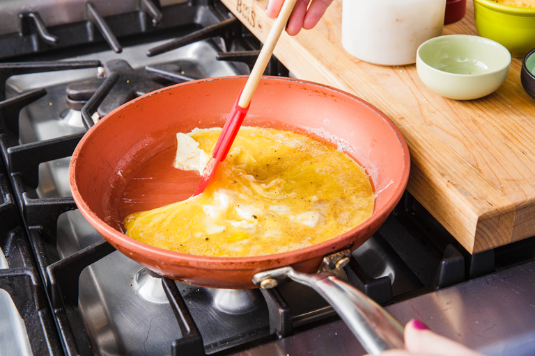

Omelet Recipe
This recipe makes a delicious omelet that I have not yet tried. I am scared of it. It has begun to become sentient, and will not stop growling at my cat, Juicy. Someone needs to send help.

Ingredients
- 2 large eggs
- Kosher salt
- Freshly ground black pepper
- Pinch red pepper flakes
- 2 tbsp. butter
- 1/4 c. shredded chedar
- 2 tbsp. freshly chopped chives
Instructions
- In a medium bowl, beat eggs until no whites remain, then season with salt, pepper, and a pinch red pepper flakes.
- In a medium non-stick skillet over medium heat, melt butter. Pour in eggs and tilt pan so eggs fully cover the entire pan. As eggs start to set, use a rubber spatula to drag cooked edges into center of pan. Tilt pan to let uncooked egg fall to the edge of the pan.
- Once the bottom is set, but top is still a little wet, sprinkle cheese and chives on one half of omelet. Fold other side over cheese and slide omelet onto a plate.

Like this recipe? Try another recipe by Barik!
If you have any questions, email me.
By Barik Boley

- Likes Bullet lists
- Doesn't understand how a bio works
Ironically a Communist
Plays video games
Written on October 7th, 2020